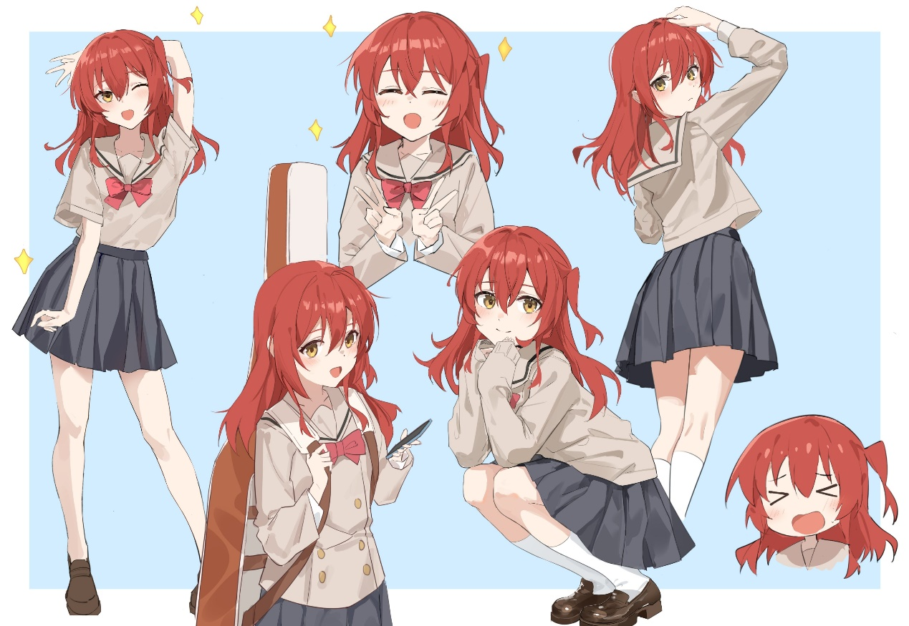
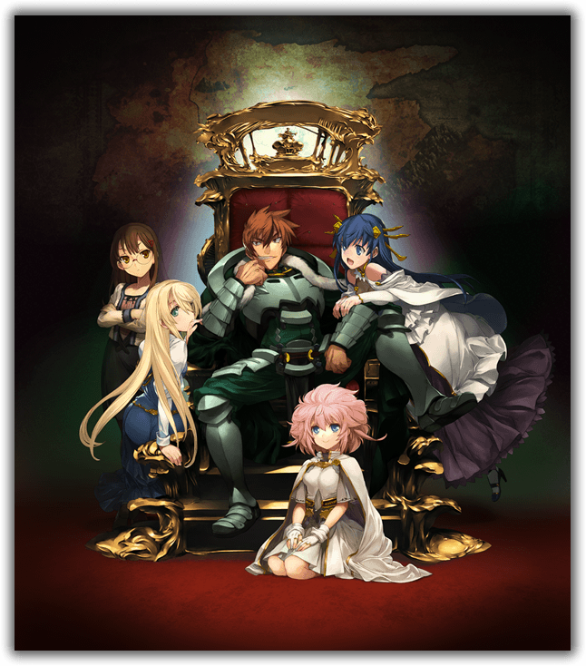

ACGN近十年浅谈
趁青春未褪去
感觉随年龄增长，兴趣爱好随之改变，是时候总结了下这逝去10年的ACGN发展，也是充满幻想的岁月。
最早的记忆是《超兽武装》和《游戏人生》，现在想来以前完全没理解其中内涵，只是觉得女主很好看，战斗很帅。当时可以说是中国互联网飞速发展又乱象丛生的时候，什么盗版、里番都可以直接在网上便利地查到，B站那时便是因此关注的，还记得那时有人推荐我看《缘之空》，懵懂的我直接百度到了，不过这当时也没激发什么奇怪兴趣。
随着时间的过去，“阅历”增长的大多是动画，以前还统计过看过的番，那时有3/4百部。不过和网上阅片无数的大佬一比便是相形见绌，也就淡了建立“纪念碑”的兴致了。
Animation(动画)
动画产业也在这十年发生了许多变化。爆火的，或者是关注度高的，一开始的主体风格是游戏人生，火影忍者，后面变为re0，中二病，樱花庄，约战等，再到现在的种种。其内容从热血战斗，思考到恋爱校园，再到异世界。
记得高中语文老师吐槽过“醒来就是敦煌”这类的网红名言，人类是追寻新鲜感的物种，当一原本珍奇的物品丰富后，人们内心便降低了其的价值，即使你的内容再有趣，世俗化、大众化后便失去了其原本的地位。若是人人都习得阳春白雪，那它便不是它自己了，例如将“花生”一词拆开在组合，便会发现其实它是一个极美的词，可是叫习惯了也就寻常。
动画的变化是顺着观众的喜爱趋势的，这点在动画领域尤为明显，京都代表性的校园恋爱；后面的大量到异世界的番，当龙傲天，扮猪吃老虎；这些年有了与固有影响反差巨大的趋势，而且它们的表现也不错，例如别当欧尼酱了、秋叶原女仆战争，overlord。而用数量解决质量的情况下，“厕纸”的产出可谓是屡创新高，但是它们的存在和发展又是有一定原因的，即满足weeb的幻想。而希望在其中突出，希望从小说变为动画的前提下，像《人类衰退之后》里一集女主为在异空间“活下去”而让漫画不断爆火，便在每一话中出现一些神转折或“爆点”。现实中，而女性主角/视角，配角，甚至动物，性转也开始出现，并拥有了一定的热度。
当时间不多时，或是看过太多番剧的情况下，内容和剧情成为优秀作品不可缺少的两条腿，看pv和制作公司后，便基本确定了本季度的追番目录，比如P9，俺没摸胖次，CloverWorks，A1。b站大的漫评up主已经比较少了，看大up能省去不少收集和看新番pv、相关漫画的时间。
Comic(漫画)
漫画本人看的不多，记得的也不多，便少写些。看漫画有种自带的随意性，它不同场景下方块化的广义蒙太奇的拼接和停顿的连续赋予其独特的表现魅力，而黑白色的留白相比彩色更容易被读者内心的颜色填补，美人更美，恶人更恶。这种体裁也导致其比其余三种体裁容易快进，文本也少，更有“躺在沙发上看完就丢”的懒散和惬意。印象深出名的有藤本树、巨人、一人之下、JOJO、一拳等，短篇如伊藤润二、和武はざ、wlop...当然如果R18漫也算的话，那总数估计也不输其他（lll￢ω￢)。
Game(游戏)
虽每年都说业界要凉，每年也有不少倒闭的（最近的戏画），但。。。这确实是事实。game中主要是gal，gal主要分为萌废，拔作？剧情和全年龄。而日渐衰弱的具体表现在了黄油转型为全年龄（柚子？），全年龄转型为手游（和泉，八月社）。这其实也是消费者的选择，担心以后gal就是页游和手游的主场了。
个人感觉gal的剧本也是偏公式化的“俗套恋爱故事”，萌废在CG上吸引人，而人物扁平化或是循规蹈矩，游戏性不强，剧情过于寻常，这对于新入坑的到无所谓，但“老人”便会提不起兴致。个人印象深的有，秽翼的音乐，萌废的柚子社，星之空/ルクル（莺神乐）/island的剧情，兰斯10的卡牌对抗，紫社的火箭乳，水社的万花镜，而黑暗系的老作那种种突破想象的18g内容。最新Hulotte（时停社）倒是让人耳目一新的萌废。但让制作公司跳出路径依赖是困难的，不然也不会有炒十年冷饭的事情了，只有靠新公司来开拓新赛道了。
推Gal的各个阶段：越涩越好，给我狠狠的贴贴do，剧情、音乐不重要-->来点slg，玩游戏游戏性才是最高的-->萌废什么太无聊了，注重剧情和立意！-->太普通了，来点刺激的。雾-->玩多了都无聊，找短小的拔作。 老游戏画面、UI太差玩不下去，
你 说 呢 ?
新游戏过于流水线化，剧情套路都一样，gal只能选择适合自己当前阶段的。虽说gal将视觉、听觉和互动性具象化到了其他表现形式达不到的程度，但又是这样的详细少了留白的余地，像是黑白漫画相比彩色漫画更能、更易表现角色和场景的张弛度，而小说相比漫画有极大地给予读者了想象空间（白字黑字加上几张插图就变厕纸了）。但纸片人在背景图片上的演绎也算不上多优秀。如果只是明确入坑时的目的是不正确的，不同阶段需求是不同的，所谓的“初心”不过是相比未来获取较少信息的情况下的想法。所以当玩家将目光远离gal时，可以说是碎片化产生的长文本白痴，也可以说是gal界原地踏步的落后，但本质上是玩家随时间生活需要和内心心态的改变。
当然在ACGN中gal的“使用”也更加麻烦，转区、VNR/luna、补丁、攻略等也需要查看文档，文本量的增加也让其有更多作品需要啃生肉，而且windows defender删除修改文件。虽说这是一个更有困难的载体形式，但声音和动态的表现力还是更容易吸引青少年。
Novel(小说)
一般指的是轻小说，文字作为载体是这四类中入门门槛最低的，也出现过汉化组吐槽作者文化水平的事出现。轻小说有些类似于中国的网文，但又有其偏爱或特有的语言表达风格和啰嗦能力。用精美的插图吸引读者的注目厕纸，再用套路化的爽文或恋爱情结保持其惯性，一部小说火了，可以漫化化，动画化甚至真人化。追过几次轻小说，半红不火的也容易腰斩。而广泛传播的汉化又容易引起原作者的不满（cn网络普及度大大超过了文化水平的提升），像真白萌，lk等网站也设置了一些限制。

印象深刻的有《以为转生到异世界就可以逃掉吗?哥哥》，这算是追过时间最长的轻小说了。《欢迎来到实力至上主义教室》、《龙与虎》、《无职转生》等还有点印象，还有几部只记得剧情而名字都忘了。总体上轻小说只能能看点剧情，吃点桃文或爽文，没有所谓的改变制度，而是更好地生活下去。现在想来轻小说有好文但不多，可能没有遇到有趣的题材，但看深度为什么不找名著呢？
总体来说，经济的发展影响着文化，轻小说受其影响最快，其它的随后，当然游戏较大的成本又导致了公司的路径依赖。萌废当道也不错，这类画风还是喜欢的。而傲娇真当退环境了么？我认为也只是火了之后太多作品同质化和表象化了，一个钉宫四萌可以成为现象级产品，而每个动画里都出现个只会喊“无路赛”的妹子那只是流水产品了。作品固守旧式可以获得一批簇拥，而商业化之下只能跟随市场的脚步。